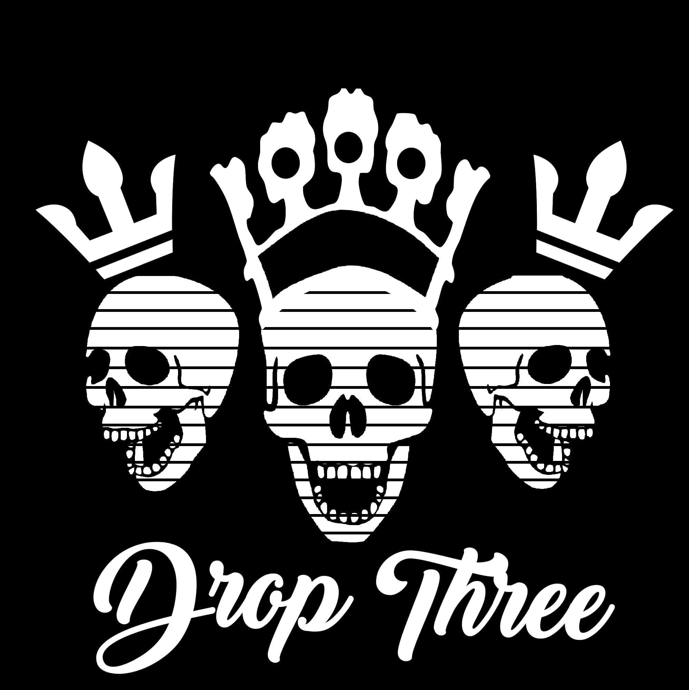

NEVERLAND BY DROPTHREE
Written And Composed by Roger Calingacion
Verse 1
Once upon a time in NEVERLAND
I'll take you by the hand just to be your man
I've waited so long to get this right
Oh my darling I wish to hold you tight
Verse 2
Take me to your garden take me way up high
Into the place where heaven cry
How can an Angel came into my life
Oh my darling I need you by my side
Cause tonight I feel this love is real
CHORUS
It feels just like a fairytale
Until you came along in my life
I know there is something real
I see the way you look into my eyes
That you will never say goodbye
Verse 3
Like a lonely river I search for love
Heading to your ocean I'll be home my love
Sailing with the moon and the stary nights
Oh my darling I wish to hold you tight
Cause tonight I feel this love is real
CHORUS
It feels just like a fairytale
Until you came along in my life
I know there is something real
I see the way you look into my eyes
That you will never say goodbye
Members
| Name |
Role |
Instrument |
|
Roger Calingacion
|
Rhythm/Vocals |
Guitar |
|
Joveniel Moreno
|
Lead Guitarist |
Guitar |
|
Jessie The Brother
|
Bassist |
Bass |
|
Winthrop B!
|
Drummer |
Drums |